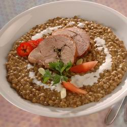

Főzelék |
A fõzelék zöldségbõl készült fõfogás, ami nem köret. Szinte bármibõl készülhet,
pl. bab, lencse, spenót, tök, zöldbab, burgonya, kelkáposzta stb. A teljes értékû, egészséges táplálkozásban fontos a növényi és az állati eredetû nyersanyagok megfelelõ aránya. Ezért a fõzelékek nagyon fontos szerepet töltenek be a korszerû, egészséges étrend összeállításában, mivel elõnyösen egészítik ki a húsból vagy tojásból készült ételeket. Gazdag az ásványianyag-tartalmuk: a vas, a mész, a jód, a nátrium szervezetünk napi szükségleteit fedezi. Igyekezzünk mindennap az idénynek megfelelõen valamilyen fõzeléket fogyasztani.
|  | |
| Lencsefőzelék | Kelkáposztafőzelék |
A fõzelékeket készíthetjük:
A fõzelékek általában úgy készülnek, hogy sós lében megfõzik a zöldséget, a levet besûrítik, majd sóval és fûszerekkel (pl. babérlevél, pirospaprika, kapor) ízesítik. A sûrítés történhet habarással és rántással, illetve saját levének elfõzésével.
A fõzeléket gyakran feltéttel (pl. pörkölttel, fõtt vagy sült hússal, kolbászfélékkel, rántott zöldségfélékkel, rántott gombával vagy kemény tojással) tálalják, de a fõétel nem a feltét, hanem a fõzelék. Ilyen értelemben a fõzeléket csak a magyarok készítik, mert más népek a fõzeléknövényeket leginkább köretként (párolva, grillezve) vagy salátaként fogyasztják.